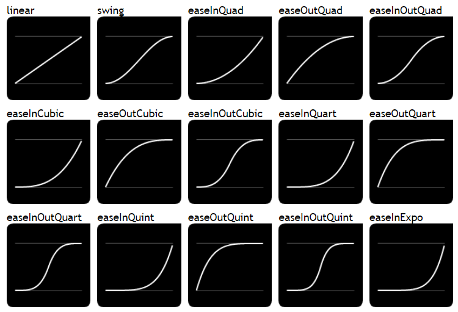

easing是jquery的一个插件，使用它可以创建更加绚丽的动画效果。
因为easing是jQuery的插件，所以必须是在引入jquery之后再引入它
jQuery自定义动画的函数.animate( properties [, duration] [, easing] [, complete] )有四个参数：
xxxxxxxxxx11 //$(".car").animate({"left": "150%"}, 4000, "linear", function() {});其中参数easing默认有两个效果："linear"和"swing"，如果需要更多效果就要插件支持了，jQuery Easing Plugin提供了像"easeOutExpo"、"easeOutBounce"等30多种效果，大家可以点击这里去看每一种easing的演示效果，下面详细介绍下其使用方法及每种easing的曲线图。
xxxxxxxxxx21<script type="text/javascript" src="http://code.jquery.com/jquery-1.8.3.js"></script>2<script type="text/javascript" src="http://gsgd.co.uk/sandbox/jquery/easing/jquery.easing.1.3.js"></script>引入之后，easing参数可选的值就有以下32种：
当然一般一个项目中不可能会用到这么多效果，为了减少代码冗余，必要时可以不用引入整个jquery.easing.1.3.js，我们可以只把我们需要的几种easing放入Javascript文件中，如项目中只用到"easeOutExpo"和"easeOutBounce"两种效果，只需要下面的代码就可以了
xxxxxxxxxx1812jQuery.extend( jQuery.easing,3{4 easeOutExpo: function (x, t, b, c, d) {5 return (t==d) ? b+c : c * (-Math.pow(2, -10 * t/d) + 1) + b;6 },7 easeOutBounce: function (x, t, b, c, d) {8 if ((t/=d) < (1/2.75)) {9 return c*(7.5625*t*t) + b;10 } else if (t < (2/2.75)) {11 return c*(7.5625*(t-=(1.5/2.75))*t + .75) + b;12 } else if (t < (2.5/2.75)) {13 return c*(7.5625*(t-=(2.25/2.75))*t + .9375) + b;14 } else {15 return c*(7.5625*(t-=(2.625/2.75))*t + .984375) + b;16 }17 },18});xxxxxxxxxx111$('.box').animate({2 width: 1000,3 height: 5004 }, {5 easing: 'easeOutBounce',6 duration: 500,7 complete: function () {8 console.log('动画完成');9 }10 }11 )值得一提的是jQuery 1.4版本中对animate()方法，easing的方法进行了扩展，支持为每个属性指定easing方法，详细请参考这里，如：
xxxxxxxxxx101 $('.box').animate({2 width: [1000, 'easeOutBounce'],3 height: [500, 'easeOutQuad']4 }, {5 duration: 500,6 complete: function () {7 console.log('动画完成');8 }9 }10 )也可以使用另外一种写法
xxxxxxxxxx141 $('.box').animate({2 width: 1000,3 height: 500,4 }, {5 specialEasing: {6 width: 'easeOutBounce',7 height: 'easeOutQuad'8 },9 duration: 500,10 complete: function () {11 console.log('动画完成');12 }13 }14 )
特性
原理
[stellar.js]是一个 jQuery插件，能很容易地给网站添加视差滚动效果。 尽管已经停止了维护，但它非常稳定，与最新版本的jQuery兼容，很多开发者也在使用它。 这个插件在jQuery插件库里很流行。
http://markdalgleish.com/projects/stellar.js/ 官网
xxxxxxxxxx11<script src="path/to/jquery/jquery.min.js"></script>2<script src="path/to/jquery.stellar.min.js"></script>HTML
xxxxxxxxxx1181<div class="content" id="content1">2 <p>TEXT HERE</p>3</div>4<div class="content" id="content2">5 <p>TEXT HERE</p>6</div>7<div class="content" id="content3" data-stellar-background-ratio="0.5">8 <p>TEXT HERE</p>9</div>10<div class="content" id="content4" data-stellar-background-ratio="0.5">11 <p>TEXT HERE</p>12</div>13<div class="content" id="content5" data-stellar-background-ratio="0.5">14 <p>TEXT HERE</p>15</div>16<div class="content" id="content6" data-stellar-background-ratio="0.5">17 <p>TEXT HERE</p>18</div> CSS
xxxxxxxxxx1311body {2 font-size: 20px;3 color: white;4 text-shadow: 0 1px 0 black, 0 0 5px black;5}6p {7 padding: 0 0.5em;8 margin: 0;9}10.content {11 background-attachment: fixed;12 height: 400px;13}14#content1 {15 background-image: url("xxx.jpg");16}17#content2 {18 background-image: url("xxx.jpg");19}20#content3 {21 background-image: url("xxx.jpg");22}23#content4 {24 background-image: url("xxx.jpg");25}26#content5 {27 background-image: url("xxx.jpg");");28}29#content6 {30 background-image: url("xxx.jpg");31}xxxxxxxxxx41$.stellar({2 horizontalScrolling: false,3 responsive: true4});| 名称 | 说明 |
|---|---|
| horizontalScrolling 和 verticalScrolling | 该配置项用来设置视差效果的方向。horizontalScrolling设置水平方向，verticalScro设置垂直方向， 为布尔值，默认为true |
| responsive | 该配置项用来制定load或者resize时间触发时是否刷新页面，其值为布尔值，默认为false |
| hideDistantElements | 该配置项用来设置移出视线的元素是否隐藏，其值为布尔值，若不想隐藏则设置为false |
| data-stellar-ratio="2" | 定义了此元素针对页面滚动的速度比率，比如，0.5为页面滚动的50%，2为页面滚动的200%，所以数值越大，你可以看到页面元素滚动速度越快。 |
| data-stellar-background-ratio | 该配置项用在单个元素中，其值为一个正数，用来改变被设置元素的影响速度。 例如 值为0.3时，则表示背景的滚动速度为正常滚动速度的0.3倍。如果值为小数时最好在样式表中设置 |